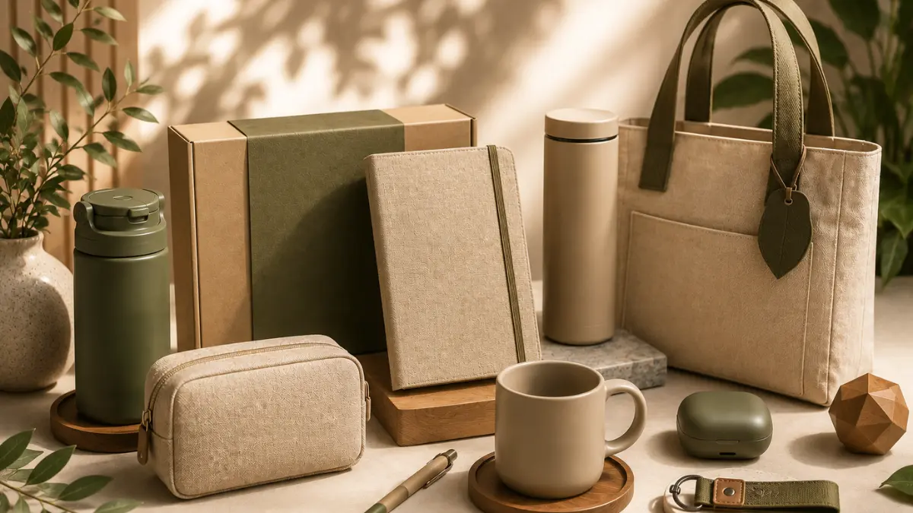

Mengapa Merchandise Kantor Premium Warna Earth Tone Semakin Populer?
Merchandise kantor premium warna earth tone semakin populer karena memberikan kesan elegan, fleksibel, serta sesuai dengan tren desain modern yang minimalis.
Tren desain korporat telah bergeser dari penggunaan warna-warna mencolok menuju warna-warna yang menenangkan dan netral.
Warna seperti cokelat tanah, hijau sage, beige, dan abu-abu hangat mampu menciptakan harmoni visual saat diletakkan di lingkungan kerja modern.
Apa Saja Pilihan Warna Earth Tone Terbaik Untuk Souvenir Kantor?
Pilihan warna earth tone terbaik untuk souvenir kantor meliputi warna beige, cokelat kayu, hijau zaitun, terakota, dan abu-abu pasir.
- Beige dan Sand: Menampilkan kesan bersih, netral, dan sangat cocok dikombinasikan dengan logo berwarna gelap.
- Cokelat Kayu dan Tan: Memberikan nuansa klasik, mewah, serta erat kaitannya dengan material kulit premium.
- Olive Green dan Sage: Menghadirkan kesan kesegaran, keseimbangan, serta komitmen pada isu lingkungan.
- Terracotta: Memberikan aksen hangat yang unik tanpa terlihat terlalu mencolok bagi penggunaan profesional.

Bagaimana Mengombinasikan Material Premium Dengan Warna Earth Tone?
Mengombinasikan material premium dengan warna earth tone dapat dilakukan melalui pemilihan bahan alami seperti kulit sintetis, kain linen, atau kayu.
Tekstur dari material memainkan peranan penting dalam menonjolkan keindahan warna earth tone.
Sebagai contoh, buku agenda yang dilapisi kulit sintetis berwarna tan akan tampak sangat cocok jika dipadukan dengan tumbler matte berwarna olive green.
"Kombinasi ini memperkuat kesan eksklusif yang ingin disampaikan perusahaan kepada penerimanya."
— Hawa Nadira, Penulis Merchandise Kantor
Pemilihan material alami ini juga dapat diselaraskan dengan panduan utama pada artikel merchandise kantor premium untuk memastikan kesesuaian standar kualitas produk secara menyeluruh.

Kesimpulan
Penggunaan warna earth tone pada merchandise kantor premium menawarkan pendekatan visual yang modern, tenang, dan sangat elegan.
Konsep ini sangat efektif bagi perusahaan yang ingin membangun citra eksklusif yang tetap fleksibel digunakan dalam berbagai suasana profesional harian.